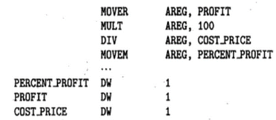

* Specification of source language:
Consists of three components:
1. Lexical rules which governs the formation of valid lexical units in the source language.
2. Syntax rules which govern the formation of valid statements in the source language.
3. Semantic rules which associate the meaning with valid statements of the language.
We can say analysis of source statement consists of lexical, syntax and semantic analysis.
Example:- percent_profit = (profit * 100) / cost_price;
a) Lexical analysis-
identifies following things:
1)=, * and / as operators
2)100 as constant
3)Remaining strings as identifiers.
b) Syntax analysis-
1)Identifies the statement as the assignment statement.
2)LHS and RHS is checked
3)a+b=c; will it work?
4)Its assignment only statement
b) Semantic analysis-
1)Determines the meaning of the statement.
2)Assigns:
(profit x 100)/cost_price to percent_profit RHS assigned to LHS
Synthesis Phase: This consists of two main activities-
1)Creation of Data Structures in the target program( Memory Allocation)
2)Generation of target code(code generation)
A Language Processor generates following assembly language statements for:
percent_profit = (profit * 100) / cost_price

Where,
MOVER move a value from a memory location to CPU register
MOVEM move a value from a CPU register to memory location
DW reserves one or more words in memory